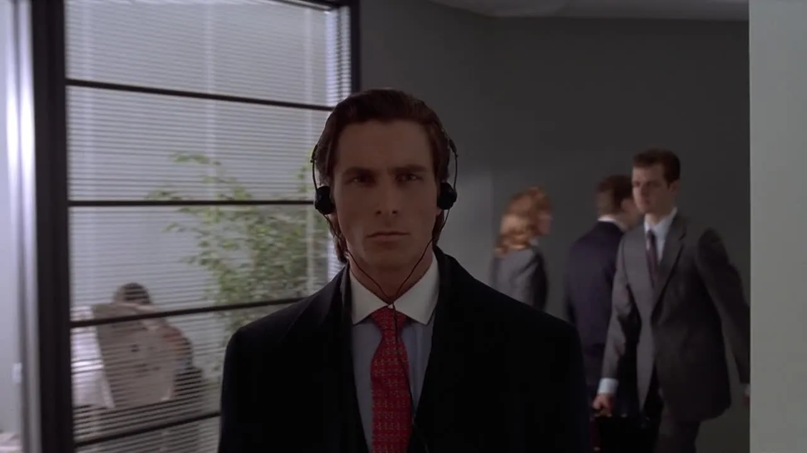
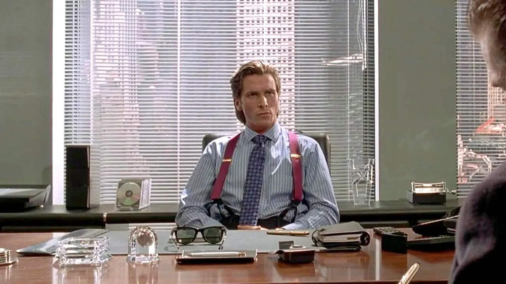
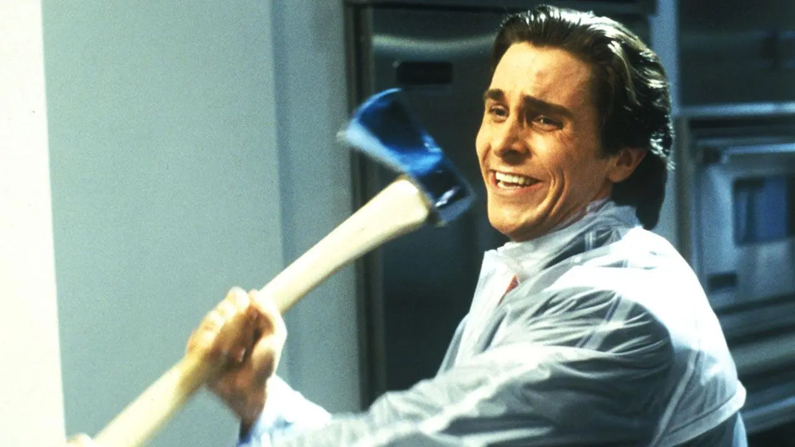

Утренняя рутина: культ тела и стерильная эстетика
Для Бэйтмана забота о себе — это религия, а одежда начинается с идеальной кожи. Его день стартует с маниакального многоступенчатого ухода. В этот момент его «гардероб» состоит из минималистичных вещей: белоснежных полотенец, минималистичных халатов и безупречно сидящего белья. Здесь нет места случайным деталям — всё должно быть стерильно, дорого и симметрично.
Образ: Классический шёлковый или хлопковый халат глубокого тёмного оттенка, подчёркивающий атлетичное телосложение. Полное отсутствие принтов или ярких цветов. Патрик создаёт образ идеального человека нового поколения, у которого всё находится под абсолютным контролем — от текстуры кожи до складок на домашней одежде.


Внутреннее состояние: Патрик панически боится раствориться в толпе таких же амбициозных коллег, но одновременно с этим отчаянно пытается соответствовать их стандартам. Утренний уход и выбор домашней эстетики — это калибровка его маски перед тем, как выйти в мир, где тебя оценивают по бренду питьевой воды и качеству визитки.
Корпоративный Уолл-стрит: «Power Dressing» как символ доминирования
Когда Бэйтман переступает порог офиса Pierce & Pierce, на сцену выходит тяжёлая артиллерия мужской моды конца 80-х. Это эпоха гигантских подплечников, широких лацканов и свободного кроя, который должен был делать силуэт мужчины монументальным и угрожающим. Костюм здесь — это не дресс-код, это оружие в негласной войне за статус.
Образ: Костюмы в тонкую полоску (pinstripe suit), рубашки со сменными белыми воротничками (contrast collar) и, конечно же, культовые подтяжки. Бэйтман сочетает дорогие шелковые галстуки со сложными геометрическими узорами. Каждый элемент выверен до миллиметра: длина манжеты, вырез жилетки, узел галстука. Весь этот ансамбль кричит об огромных деньгах и безупречном вкусе, хотя на самом деле Патрик просто копирует чужие модные гайды, чтобы казаться живым.
Внутреннее состояние: Напряжённое соперничество доведено до абсурда. Момент, когда коллеги Бэйтмана поочередно хвастаются своими визитками, идеально вскрывает его суть: его эго настолько хрупкое, что чужой удачный шрифт или оттенок бумаги могут довести его до тошноты и панической атаки. Костюм — его скафандр, удерживающий внутреннее безумие.
Ночной кошмар: прозрачный дождевик и финальный штрих к портрету
Самый жуткий и одновременно гениальный контраст фильма случается в культовой сцене с Полом Алленом. Художники по костюмам создали невероятный визуальный метафорический образ, объединив высокую моду Уолл-стрит с хладнокровным насилием.


Образ: Поверх идеального, сшитого на заказ костюма Бэйтман надевает дешёвый прозрачный пластиковый дождевик. С одной стороны, это чистая практичность психопата, который не хочет испачкать дорогую ткань кровью. С другой — потрясающая аллегория: пластик обнажает его суть. Бэйтман полностью прозрачен, под его дорогой одеждой буквально нет человеческой души, там пустота.
Внутреннее состояние: В этот момент маска яппи окончательно спадает, уступая место первобытному хаосу. Но даже убивая, Патрик продолжает рассуждать о поп-музыке, качестве звука и брендах. Гардероб до самого конца остаётся его главным, нерушимым алиби — ведь общество никогда не заподозрит монстра в человеке, который так идеально сочетает цвета своего галстука и нагрудного платка.